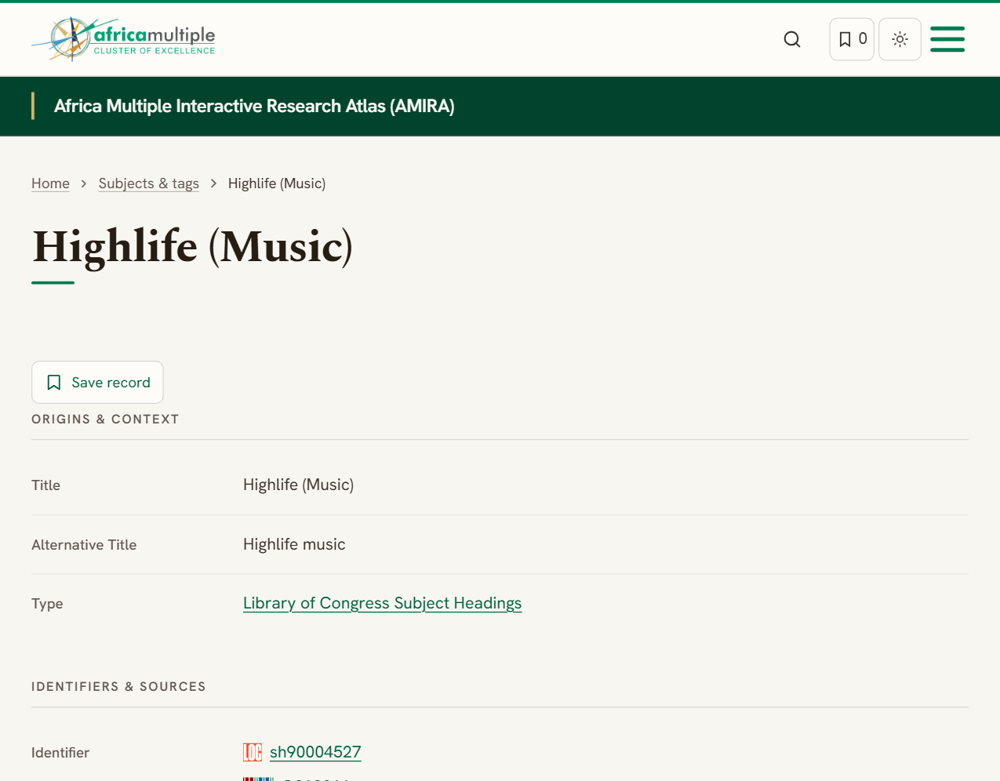

HKADH 2027 · Education University of Hong Kong, 21 January 2027
Knowledge gaps and mediated access
AI infrastructure and practice for African research data
Frédérick Madore, Jiayu Yang, Oliver Baumann, Neeraj Thandayan Viswajith, Durgesh Nandini and Mirco Schönfeld
Scan for these slidesslides.frederickmadore.com
A catalogue should define its own terms
Three goals: the Cluster’s agenda, taken to the catalogue
Say what a term means in the research we catalogue
Shift who describes: definitions drawn from that research
Keep each definition cited, dated and open to revision
The question
Can language models draft definitions from AMIRA’s holdings, with every claim traced to a source? Does that improve on borrowing a definition or asking a model alone?
“It is our contention that this approach allows us to transcend the limits of thinking in fixed categories and binaries.”
The Africa Multiple Interactive Research Atlas (AMIRA) is the research-data platform of the Africa Multiple Cluster of Excellence, University of Bayreuth (Germany). The material usually stays with the researchers, archives and libraries that hold it; the metadata is shared.
3,975Research items
106Projects
813Publications
28Languages
43Podcasts
142Videos
AMIRA MCP server, 16 November 2026; items include private records
The server, not the model, computes counts, facets and related records
Curator mode: private records and full text behind a personal token
Code on GitHubgithub.com/AM-Digital-Research-Environment/amira-mcp-server
A label and a list, but no definition
data.africamultiple.uni-bayreuth.de/s/amira/item/2412Open record ↗

Records with this heading
55
Definition
None
Readers also need to know what a concept means and how the research catalogued in AMIRA uses it.
What a definition would add
What highlife means in the research AMIRA holds, each claim cited to an article.
Vocabularies identify a concept; Wikipedia explains only the well known
Library of Congress
Highlife (Music)
No scope note
Mbira music
A cataloguing instruction: “Here are entered compositions not in a specific form or of a specific type for solo mbira…”
Wikidata
highlife
“musical genre originating in Ghana”
timbila, a xylophone
Listed with the alias “thumb pianos”
Wikipedia, in English
Highlife
A full article, with editions in 24 languages
Dondo, an Akan drum
No article. “Donno” redirects to “Talking drum”
id.loc.gov and wikidata.org, read 16 and 17 November 2026; en.wikipedia.org, 24 November 2026
The sources: ILAM’s journal African Music
The International Library of African Music (ILAM), at Rhodes University (South Africa), holds recordings, journals and photographs of music from across Africa.
1954–2023Years
45Issues
1,032Articles
935With full text
Definitions quoted from seventy years of research
Articles found by what they discuss
Vocabulary dated, article by article
AMIRA, ILAM collection page and full-text map, 16 November 2026. The full text is private.
Definition: noneThe reader gets a label and a list.
A
Library of Congress heading
No scope note for this heading.
B
Wikidata
“musical genre originating in Ghana”
C
A small model, alone
Writes from memory. Cites nothing.
D
The same model, reading AMIRA
search→read→quote
10 tool calls · 5 full texts
AMIRA MCP server 935 ILAM full texts
Claude Haiku 5.5 95 words · 7 claims
Highlife is a popular dance music of urban West Africa, above all Ghana and Nigeria, that fuses African and Western musical styles…
Smith 1962 · 3 quotes
Emielu 2013 · 1 quote
Otchere 2016 · 2 quotes
Jackson 2012 · 1 quote
7 of 7 claims carry a quote found in the text the model read.
Code
Is each quote in the text the model read?
Four larger models, blind
Which of two definitions goes on the record?
Researchers (planned)
Would you put this on the record?
Highlife, defined from AMIRA’s sources
Highlife is a popular dance music of urban West Africa, above all Ghana and Nigeria, that fuses African and Western musical styles. Writers describe it as a compromise between African traditional forms and Western music, mostly sung in many vernaculars with simple, binary-form melodies. It emerged as a national rather than ethnic music in the 1950s.
Claim
Quote found in the text the model read
Source
1
“all represent this compromise between African traditional forms and Western music.”
7 of 7 claims carry a quote found in the text the model read.
Claude Haiku 5.5, route D, run of 16 November 2026. Sources: articles in African Music (ILAM), linked to their AMIRA records. Two more definitions below (↓): dondo and multiplicity.
Dondo, defined from AMIRA’s sources
Donno (also written dondo) is an hourglass-shaped drum with skins at both ends joined by woven strings, used in Ghanaian ensembles, chiefly Akan adowa and Kete. It is a support drum, often pitched lower than the lead talking drum (atumpan). In Akan practice it is used in girls’ puberty rites, and it was traditionally one of the few drums women were allowed to play.
Claim
Quote found in the text the model read
Source
2
“donno hourglass-shaped tension drum, dawuro iron bell, and ntorowa gourd rattle”
7 of 7 claims carry a quote found in the text the model read.
Claude Haiku 5.5, route D, run of 17 November 2026. Sources: articles in African Music (ILAM). This drum has no Wikipedia article and no Wikidata item.
Multiplicity, defined from AMIRA’s sources
Multiplicity is a way of understanding African and African diasporic life-worlds as heterogeneous, coexisting, and mutually influential rather than as one uniform object or fixed category. It attends to plurality and simultaneity: identities, experiences, influences, and forms of knowledge may vary within a community and connect across contexts. It is studied alongside relationality and reflexivity, which help analyse those connections and perspectives.
Claim
Quote found in the text the model read
Source
1
“capture the simultaneity of heterogeneous and mutually influential African and African diasporic life worlds”
3 of 3 claims carry a quote found in the text the model read; one of its six quotes was not found.
GPT-6 Luna, route D, run of 16 November 2026. Sources: the Cluster’s working papers and articles in African Music (ILAM).
Four models reading AMIRA on highlife
Model
Origin given
Quotes found
Est. cost (USD)
Claude Haiku 5.5
Debated: Konkomba singing bands, several streams
7 of 7
0.014
GPT-6 Luna
Ghana, then across West Africa
3 of 3
0.014
Gemini 3.5 Flash-Lite
Local forms with brass band, jazz and ballroom
3 of 3
0.016
Mistral Small 4
Local forms with ballroom, brass band and Latin American music
1 of 5
0.029
Route D, one run per model, 16 November 2026. Costs estimated from list prices. Tool calls and what each definition adds: annexe.
One English name, three drums
Talking drum
57articles
One Wikidata item. Reading AMIRA, all three usable definitions name members: Yoruba dùndún, Akan atumpan.
Dùndún, Yoruba (Nigeria)
26articles
No Wikidata item. The Yoruba label “Dundun” sits on the Mande dunun, another drum.
Donno or dondo, Akan (Ghana)
9articles with “donno”
No Wikidata item. Alone, only one model of four placed it in Ghana.
Does one model keep the three drums apart?
Verdicts “distinct”: model alone 3 of 9; reading full texts 6 of 9; passages only 0 of 9, all flagging dondo merged with a Yoruba drum.
Articles: full-text matches in African Music (ILAM). Wikidata, definitions (four models, one run per cell) and open verdicts (no answer key: Claude Opus 5.5, GPT-6 Astra, Gemini 4 Argon; uncalibrated; unanimous), 17 November 2026. Claude Haiku 5.5 left out: no usable grounded talking-drum definition.
Reading AMIRA helped most where the models knew least
45 pairs, by majority
Reading AMIRA
Model alone
Neither
Without the judge of the author’s family
23
13
9
All four judges
21
9
15
of which 5 concepts with little on Wikipedia
16
2
11
of which 3 well covered: highlife, timbila, talking drum
5
7
4
The lead holds with any one judge or any one concept left out.
Uncalibrated judges
They score from their own training, the knowledge the model alone draws on. No researcher has checked them.
Claude Opus 5.5, GPT-6 Astra, Gemini 4 Carbon and Qwen4 Max chose between each of six author models’ two definitions, text only, in both orders; a verdict that changed with the order counts as neither. Verdicts 25 November 2026; one run per cell. English Wikipedia measured after the first verdicts.
Wikidata, extended but never contradicted
Wikidata: multiplicity
“philosophical assertion that there is more than one geo-historical trajectory, developed by Edmund Husserl, Henri Bergson, and Gilles Deleuze”
Reading AMIRA: GPT-6 Luna
“Multiplicity is a way of understanding African and African diasporic life-worlds as heterogeneous, coexisting, and mutually influential rather than as one uniform object or fixed category. …”
57 verdicts by three judges, four authors
The grounded text extends or nuances Wikidata in every verdict; it never contradicts it, and never simply agrees. Multiplicity: another sense in 12 of 12. Talking drum: a category, not one hourglass drum, in 9 of 9.
Wikidata Q3860307, read 17 November 2026. Route D definition, 16 November 2026. Open comparison by the three judges, 17 November 2026; one run per cell.
Passages fit a small window; a tight budget cost quality
Same 16 cells: 4 models, 4 concepts
Full texts
Passages
Passages, tight budget
Largest single call, median (tokens)
49,980
19,632
14,240
Runs whose largest call fits 32k
2 of 16
12 of 16
16 of 16
Est. cost, 16 runs (USD)
0.259
0.138
0.139
Drums kept apart, judges’ verdicts
8 of 12
9 of 12
4 of 12
Full texts preferred, pairs by majority
–
8 of 15
12 of 16
The price was the budget
Six records per search, truncated results, twelve tool calls: two of four models then merged the Akan dondo with a Yoruba “dondon”.
Highlife and three drums, one run per cell, 24 November 2026; provider token counts; panel in both orders, uncalibrated.
Three limits of the pilot
The judges know what the models know
They score from the same training knowledge the model alone uses, and no researcher has calibrated them. Our aim is how this archive defines a concept, not the best definition: the model alone winning on highlife is no failure.
Keyword search finds a term only as written
Another language or spelling is missed unless the record carries it. Retrieval by meaning is not built yet.
Older sources, older words
6 to 7uses of “tribal” per 10,000 words, 1957 and 1962
Under 1 from 2007 to 2023, apart from one sparse year. Spellings date too.
“Tribal”: AMIRA MCP server, full-text map of 657 African Music articles, 16 November 2026. Every result in this talk: one run per cell.
What comes next in the pilot
1Retrieval by rank and meaning
Results are not yet ranked by relevance; similarity exists per record, not per passage.
→
2Local open-weight models
Through Ollama, for small context windows: prepared, not yet run.
→
3About 50 concepts
Prompts frozen first; three runs per cell.
→
4Review by researchers
Specialists read the definitions and calibrate the judges.
“Would you put this on the record?”
Thank you
Reading the archive helped most where the models knew least.
Frédérick Madore, Jiayu Yang, Oliver Baumann, Neeraj Thandayan Viswajith, Durgesh Nandini and Mirco Schönfeld
 Scan for these slidesslides.frederickmadore.com
Scan for these slidesslides.frederickmadore.com
 Code on GitHubgithub.com/AM-Digital-Research-Environment/
Code on GitHubgithub.com/AM-Digital-Research-Environment/![Pipeline in four columns. The gap: the AMIRA subject Highlife (Music) is the heading of 55 records and has no definition. Four ways to fill it: A, the Library of Congress heading, with no scope note; B, Wikidata, 'musical genre originating in Ghana'; C, a small model alone; D, the same model reading AMIRA through its MCP server. Only route D leads to a cited definition: Claude Haiku 5.5, 95 words, 7 claims, each with a quote found in the text the model read, from four sources. Review: by code, then by a blind panel of four larger models; review by researchers is planned.](assets/pipeline.png)